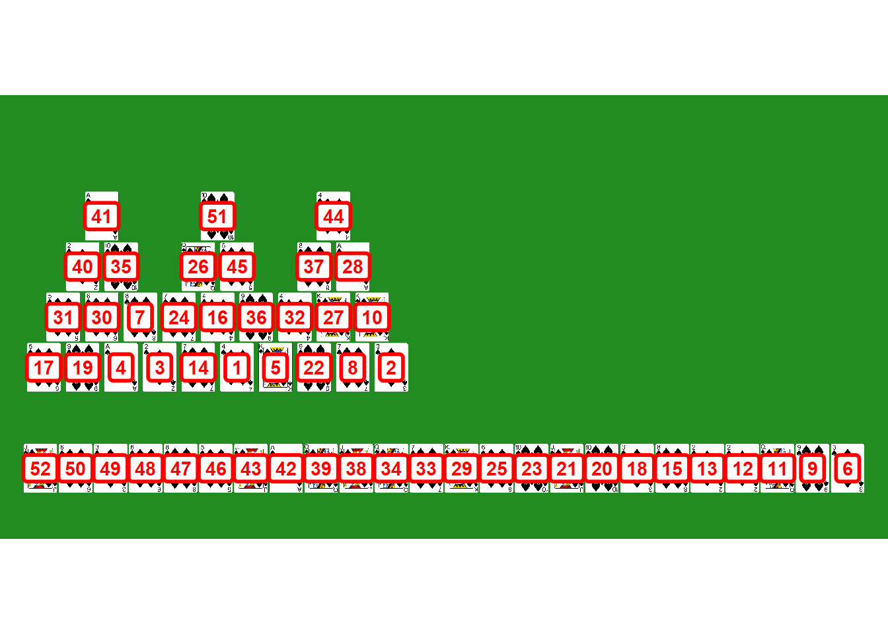
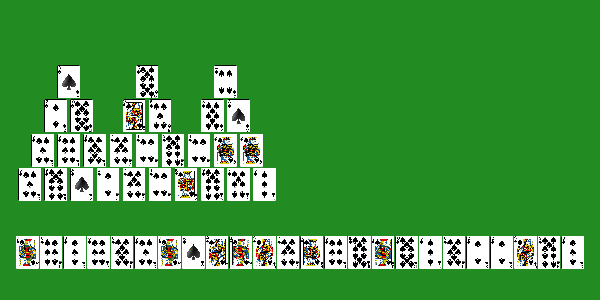

# right to left (i.e., top to bottom)
stock <- c(3,9,12,2,2,8,3,10,11,10,6,13,7,12,11,12,1,11,5,8,6,3,6,11)
# by row, starting at the lower left
board_orig <- c(
5, 9, 1, 2, 7, 4, 13, 9, 7, 3,
5, 6, 8, 7, 4, 9, 4, 13, 13,
2, 10, 12, 5, 8, 1,
1, 10, 4
)Tripeaks Solver
R
Data Visualization
ggplot2
A stochastic method for solving tripeaks games.
During COVID-19 brain fog, I had just enough mental capacity to play a lot of Microsoft Solitaire games. I found that TriPeaks on master and grandmaster difficulty gave me more trouble than the others. You have to find just the right combination of not clearing cards from the board, and at times, it would take me an annoyingly long time to find that magical combination. As the brain fog cleared, I decided to write some code to take care of those pesky games, and this is it.
To address the elephant in the room: yes, this is completely cheating! On the other hand,
Anyway, the method I came up with requires me to input all of the cards manually, which means I have to at least expose all of the cards, write them all down, and type them into my console. The point is, this will solve a board, but it won’t win any speed contests.
The Algorithm
My first thought about how to go about this was to try and keep track of all possible branches of possible moves and grind through them all until I found a solution. That seemed like a lot of work, so I thought about a different approach. As I clear a board the first time, I have a general strategy, but with the more difficult levels, I almost never clear the board on the first attempt. It feels a bit random about which cards to clear or leave on the board for later, so why not embrace the randomness? Instead of keeping track of all possible moves, I just randomly select among the available moves (including not making a move at all). Depending on the level of randomness, it turns out, this method can clear a board in 20 attempts, on average. A lot less than I expected!
Let’s get to it. The first thing we need are the cards, so I create two vectors: one for the stock cards at the bottom stock, and one for the main board board_orig. For the stock, I put the cards in order from top to bottom (or, from right to left based on the Microsoft Solitaire layout). For the board, I start at the lower left, and go left to right across the bottom row, then left to right across each successively higher row.
Before I get to the main script, I wrote one function get_viz_idx() that takes the board vector as input and returns a vector of the board indices that are currently visible. As I mention below, when a card from the board is cleared, I replace it with a 0 in the board vector. I take advantage of that to determine what the remaining cards are. Then, starting with the bottom row, I see what cards remain in that row. Based on what remains in the bottom row, I can then determine what cards are visible in the next higher row. I apply that same logic to the 3rd and 4th rows and then return a vector containing the indices of visible cards.
get_viz_idx <- function(bd){
remain <- bd != 0 # boolean for the remaining cards
r1 <- which(remain[1:10]) # indices of remaining bottom row (row 1) cards
r2 <- c() # second from bottom row, etc.
r3 <- c()
r4 <- c()
r2_filter <- remain[1:10] # check row 1 to see what's visible in row 2
for (i in 1:(length(r2_filter)-1)){
if(!r2_filter[i] & !r2_filter[i+1] & remain[i+10] != 0){
r2 <- c(r2, i+10)}
}
r3_filter <- remain[11:19] # check row 2 to see what's visible in row 3
for (i in 1:(length(r3_filter)-1)){
if(!r3_filter[i] & !r3_filter[i+1] & remain[i+19] != 0 & i <= 2){
r3 <- c(r3, i+19)}
if(i == 3 | i == 6) next
if(!r3_filter[i] & !r3_filter[i+1] & remain[i+18] != 0 & (i == 4 | i == 5)){
r3 <- c(r3, i+18)}
if(!r3_filter[i] & !r3_filter[i+1] & remain[i+17] != 0 & i > 6){
r3 <- c(r3, i+17)}
}
r4_filter <- remain[20:25] # check row 3 to see what's visible in row 4
for (i in c(1,3,5)){
if(!r4_filter[i] & !r4_filter[i+1] & remain[i+25] != 0 & i == 1){
r4 <- c(r4, i+25)}
if(!r4_filter[i] & !r4_filter[i+1] & remain[i+24] != 0 & i == 3){
r4 <- c(r4, i+24)}
if(!r4_filter[i] & !r4_filter[i+1] & remain[i+23] != 0 & i == 5){
r4 <- c(r4, i+23)}
}
viz <- c(r1, r2, r3, r4) # combine indices of visible cards into one vector
viz
}For the main script, I put everything in a nested while() loop. Each pass through the outer loop is an attempt at solving the game. As I mentioned, when a card is cleared from the board, I change the card to a 0, so the loop keeps going as long as there are less than 28 zeros in the board vector. I also added a counter count to keep track of how many attempts have been made. If it reaches 1000, then I’m fairly certain the board is unsolvable, and the loop will stop.
I keep track of a game’s history with history(). If the next move is to remove a card from the stock, I add a 0. Otherwise, I add the index of the board vector cleared.
The inner loop will stop when there are no stock cards left, and the comments should explain the rest of the logic.
board <- board_orig # make a copy of the original board.
count <- 0 # attempt counter
while (sum(board==0) != 28 & count <= 1000){
board <- board_orig
history <- c() # 0 if draw from stock, else index of board played
idx_played <- c() # helps keeps track of what cards are visible
stock_count <- 1 # the current stock card index
card <- stock[stock_count] # the current card being considered for a move
while(stock_count <= 24){
if(is.null(idx_played)){ # at the start of a game,
viz_idx <- 1:10 # the visible board indices are 1:10
}else{ # otherwise call a function to get the visible board indices
viz_idx <- get_viz_idx(board)
}
# get indices for all valid moves
if (card == 1) { # allows for wrap-aound if card is an Ace
poss_next <-
viz_idx[c(which(board[viz_idx] == card + 12),
which(board[viz_idx] == card + 1))]}
if (card == 13) { # allows for wrap-aound if card is a King
poss_next <-
viz_idx[c(which(board[viz_idx] == card - 12),
which(board[viz_idx] == card - 1))]}
if (card > 1 & card < 13) {
poss_next <-
viz_idx[c(which(board[viz_idx] == card - 1),
which(board[viz_idx] == card + 1))]}
# if no available card to remove or randomly choose not to clear it,
# then advance to next stock card
if (length(poss_next) == 0 | runif(1) > 0.99){
stock_count <- stock_count + 1
history <- c(history, 0)
card <- stock[stock_count]
}else{
next_idx <- ifelse(length(poss_next) == 1, poss_next, sample(poss_next, 1))
idx_played <- c(idx_played, next_idx)
history <- c(history, next_idx)
card <- board[next_idx]
board[next_idx] <- 0
}
}
count <- count + 1
}
history [1] 6 10 4 3 7 0 13 9 0 19 0 0 0 5 0 15 1 0 2 0 0 8 0 14 0
[26] 22 18 25 0 12 11 17 0 0 21 16 24 0 0 20 26 0 0 28 23 0 0 0 0 0
[51] 27 0So there’s a solution! Clear as mud, right? Recall that a 0 in history means that a stock card was played, so I can replace those with stock vector. If it’s not a zero, it represents the index of the board_orig vector that was cleared. I need to put that all together and clean things up so I can make a clean visualization of how to win the game.
Results Cleanup
I’m going to need some help from dplyr for data wrangling.
library(dplyr)The first thing I’m going to do is make a dataframe df for the cleaned up results. The card column contains all of the cards from the stock and board vectors. The pile column just indicates which of the two vectors the card came from, and index is simple the indices of the original two vectors.
board <- board_orig
df <- tibble(
card = c(stock, board),
pile = c(rep("stock", length(stock)), rep("board", length(board))),
index = c(1:24, 1:28)
)
head(df)I then create a dataframe h to contain the history vector and which “pile”, or vector, the history entry refers to. I replace all of the 0s (the stock cards) with the order in which they appeared in stock, and then I join the two dataframes together.
h <- tibble(
index = history,
order = 1:52,
pile = ifelse(index == 0, "stock", "board")
)
h[h$index==0, "index"] <- 1:sum(h$index==0)
df <- df |> left_join(h, by = c("pile", "index"))
head(df)Visualization
What I want to visualize is something like the game itself, so I found some .png files for each of the cards. Since suits don’t matter in TriPeaks, I ignored them from the beginning. It might look a little funny, but I’m just going to display spades for each card. Here I match the card rank with the card image.
df <-
df |> mutate(
img = case_when(
card == 1 ~ "playing_cards/ace_of_spades.png",
card == 2 ~ "playing_cards/2_of_spades.png",
card == 3 ~ "playing_cards/3_of_spades.png",
card == 4 ~ "playing_cards/4_of_spades.png",
card == 5 ~ "playing_cards/5_of_spades.png",
card == 6 ~ "playing_cards/6_of_spades.png",
card == 7 ~ "playing_cards/7_of_spades.png",
card == 8 ~ "playing_cards/8_of_spades.png",
card == 9 ~ "playing_cards/9_of_spades.png",
card == 10 ~ "playing_cards/10_of_spades.png",
card == 11 ~ "playing_cards/jack_of_spades.png",
card == 12 ~ "playing_cards/queen_of_spades.png",
card == 13 ~ "playing_cards/king_of_spades.png"
)
)
head(df)This next bit took a fair amount of trial and error. What I’m doing is creating x and y columns that will be used as coordinates for where each card goes on the board. Then I make sure the dataframe is arranged by the order in which the cards were played.
df <-
df |> mutate(
x = c(24:1, 1:10*1.1, (1:9+0.5)*1.1, c(2,3,5,6,8,9)*1.1, c(2.5, 5.5, 8.5)*1.1),
y = c(rep(0.98, 24),
rep(1.02, 10),
rep(1.04, 9),
rep(1.06, 6),
rep(1.08, 3))
)
df <- df |> arrange(order)
head(df)Now I put it all together to make the visual with ggplot for the base graphics, and I use ggimage to render the cards. The number on top of each card is the order in which the card should be cleared from the board.
library(ggplot2)
library(ggimage)
ggplot(df) +
geom_image(aes(x=x, y=y, image=img), size = 0.038, by = "width", asp = 2) +
geom_label(aes(x=x, y=y, label=order), color="red",
fontface="bold", label.size=1) +
theme_void() +
ylim(0.96, 1.12) +
theme(aspect.ratio = 1/2,
panel.background = element_rect(fill = 'forestgreen', color = 'forestgreen'))
I made a Shiny app that incorporates everything up to this point. For this post, I take it one more level by animating the solution with gganimate. First, though, I need to create a dataframe, df2, that is structured to support the animation. The first “frame” of the animation will display all of the cards. The second frame will show the same thing minus the first cleared card, and so on. So, I need a dataframe with \(52 + 51 + 50 + ... + 1 = 1378\) rows. The map_dfr() function from the purrr package is a nice tool for this. It will bind a 52-row dataframe with a 51-row dataframe with a 50-row dataframe, and so on to produce exactly what I need.
library(purrr)
df2 <- 1:52 |> map_dfr(~ df |> slice(.x:52) |> mutate(frame=.x))
head(df2)Finally, I use gganimate to create an animated gif as follows.
library(gganimate)
anim <-
ggplot(df2) +
geom_image(aes(x=x, y=y, image=img), size = 0.038, by = "width", asp = 2) +
theme_void() +
ylim(0.96, 1.12) +
theme(aspect.ratio = 1/2,
panel.background = element_rect(fill = 'forestgreen',
color = 'forestgreen')) +
transition_time(frame)
animate(anim, nframes=52, duration=26, width=6, height=3, units="in", res=300)